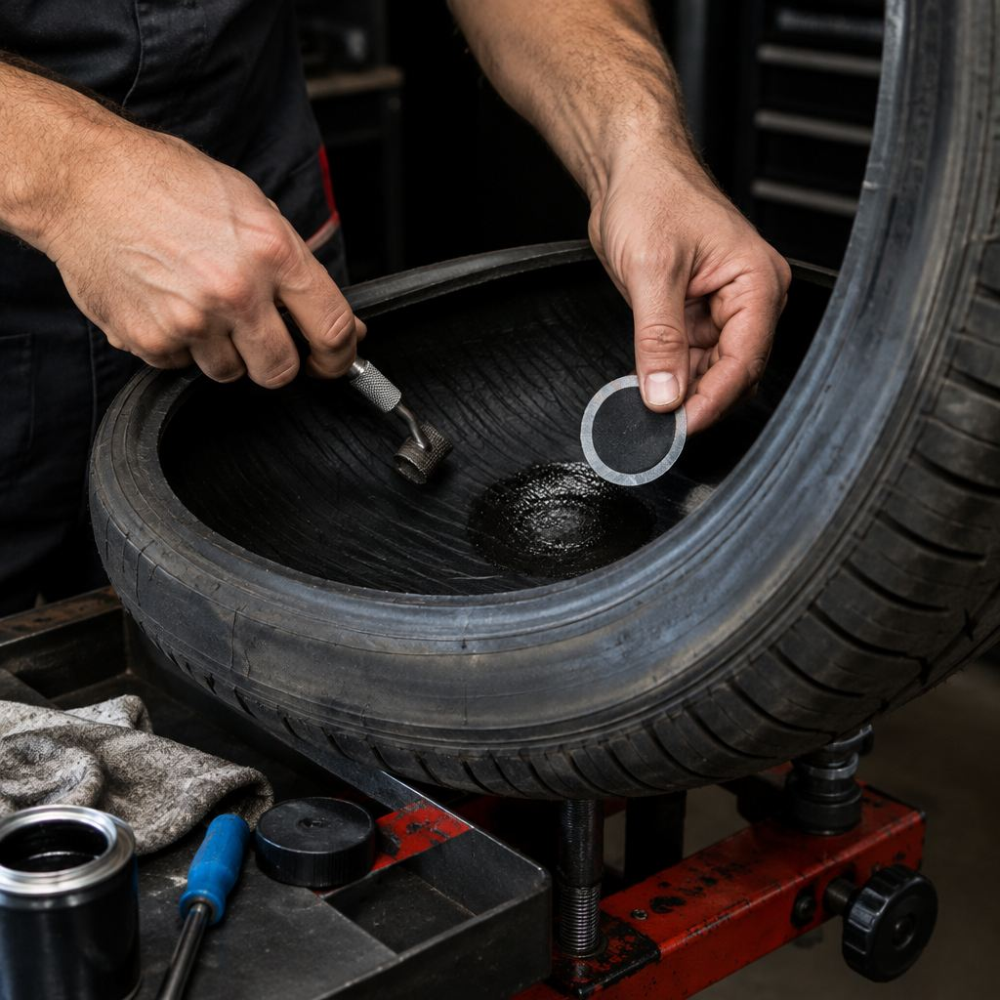

Главная / Проверка колёс
Проверка шин
и дисков
Где чаще всего прячется причина спуска, вибрации и шума. И что с этим реально можно сделать.
сезон 04 / проверка
Колесо спускает?
Смотрим, где
Нажмите на зону колеса: расскажем, что там обычно бывает, и честно скажем, ремонтируется это или нет. Окончательное решение — после осмотра.
памятка
Зона → что бывает
Короткая памятка. Точный вердикт даём после осмотра колеса на месте.
| Зона | Что бывает | Что проверяем |
|---|---|---|
| Протектор Низкопрофильные, RunFlat и крупные диски — отдельная работа. Стоимость уточняем до записи, чтобы не было сюрпризов. | Ремонт возможен, если повреждение в пределах протектора и корд не задет. Решение — после осмотра. | замер остатка протектора, поиск порезов и грыж, проверка равномерности износа |
| Плечевая зона Низкопрофильные, RunFlat и крупные диски — отдельная работа. Стоимость уточняем до записи, чтобы не было сюрпризов. | Плечо нагружено, поэтому ремонт делаем только после осмотра и не всегда возможен. | осмотр порезов, проверка корда, оценка целесообразности ремонта |
| Боковина Низкопрофильные, RunFlat и крупные диски — отдельная работа. Стоимость уточняем до записи, чтобы не было сюрпризов. | Порез или грыжа на боковине чаще означают замену: корд здесь не восстанавливается надёжно. | осмотр грыж и порезов, проверка маркировки и размеров, проверка даты выпуска |
| Посадочное кольцо Низкопрофильные, RunFlat и крупные диски — отдельная работа. Стоимость уточняем до записи, чтобы не было сюрпризов. | Если борт повреждён, шина может травить по посадке. Проверяем герметичность после монтажа. | осмотр борта и посадки, очистка посадочного места, проверка на утечку |
| Диск Низкопрофильные, RunFlat и крупные диски — отдельная работа. Стоимость уточняем до записи, чтобы не было сюрпризов. | Биение диска не лечится балансировкой: сначала оцениваем сам диск. | проверка биения, осмотр кромки и отверстий, контроль после установки |
| Вентиль Низкопрофильные, RunFlat и крупные диски — отдельная работа. Стоимость уточняем до записи, чтобы не было сюрпризов. | Меняется быстро и недорого: если вентиль старый, лучше заменить при смене комплекта. | проверка герметичности, осмотр резины вентиля, замена при необходимости |